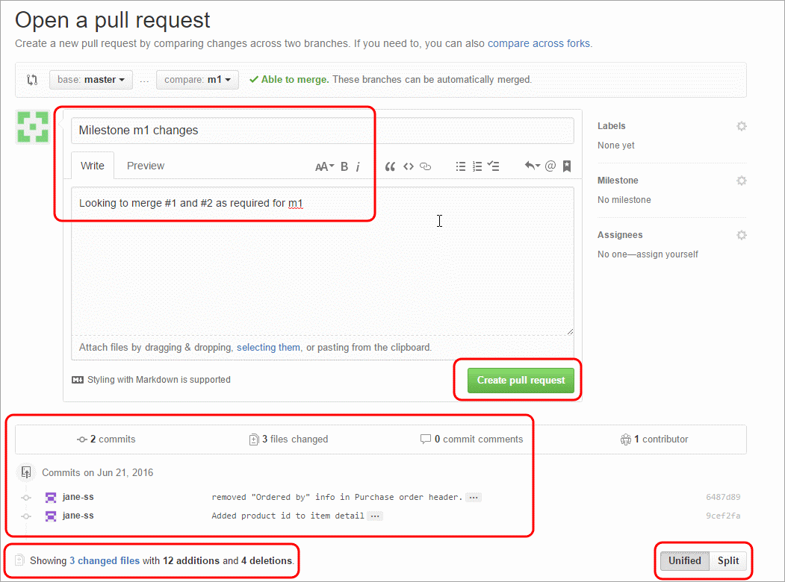

Part 4: Reference
Git: Reference
Getting Started
Create a new repository on GitHub
Clone that repository locally onto your computer
git clone git@github.com:jacobjameson/simples_script.git
Linear Workflow
cdinto the folder containing your project.cd ~/path/to/projectCheck the status of your local repository to make sure you didn’t forget to commit any work.
git statusThen pull the latest changes from the remote repository on GitHub.
git pullDo a discrete chunk of work on your project (lets say you added a new analysis)
Check the status again, then add the files you’d like to commit to the staging area.
git status git add analysis.R git statusCommit with a descriptive summary of exactly what you did
git commit -m "add new analysis"Push that change back to GitHub
git push
Non-linear branching workflow
cdinto the folder containing your project.cd ~/path/to/projectCheck the status of your local repository to make sure you didn’t forget to commit any work. Run
git branchto see which branch you’re on. You should ideally be on themasterbranch.git status git branchThen pull the latest changes from the master branch of the remote repository on GitHub.
git pullCreate a new branch with a descriptive name (remember the
-boption will create a new branch, you can check out an existing branch by not using that option)git checkout -b analysis-newDo your work in discrete chunks. at the end of each chunk, add the file to the staging area, then commit it. Its usually a good idea to also push the latest to GitHub, although some people prefer to do that at the end.
Do some work
git status git add analysis.R git commit -m "add blank script" git push git statusDo more work
git status git add analysis.R git commit -m "add code to analysis script" git push git statusDo more work
git status git add analysis.R git commit -m "fixed bug" git push git statusDo more work - lets imagine this work took place across two files, an html file and a stylesheet file.
git status git add analysis.R git add graph.png git commit -m "Added the plot from the analysis" git push git statusOnce everything has been pushed to GitHub, issue a pull request from your branch back to the master branch.

You can have a discussion on this pull request using GitHub’s social features, and then merge it into the master branch when everyone agrees its a good idea to do so.
Finally, once the pull request has been merged into the master branch in the remote repository on GitHub, you’ll want to get the latest version of the master branch on your local machine. Checkout the master branch locally and then pull.
git checkout master git pull